What referna is — and isn't
Network
Consumer services
$1B category

$26.4B referred/yr · ↑ 36% over 3 years
Open category

— The white space — premium professions AI amplifies$1B category
 ·
·
 ·
·

~$3B+ public · Angi revenue ↓ 45% (3Y)
$1B category
 ·
(UpWork)
·
(UpWork)
Selling what AI replaces
Business services
MarketplaceSuppliers compete on price and ranking
— for commodity work
— for commodity work
YPO = peer development for CEOs — different audience, not a referral network.
LinkedIn = different beast — professional graph monetized by ads and recruiters, not a lead source for independent professionals.
Each category is a billion-dollar business. The missing quadrant is ours.
Sources: BNI Mid-Year Report 2025 · public filings (Fiverr, Upwork, Angi) · Thumbtack last private round